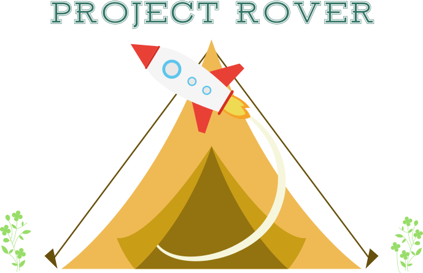

O que é?
O Projeto Rover é um CMS (Content Management System, Sistema de Gerenciamento de Conteúdo) para instituições escoteiras, sendo unidades locais e/ou regionais, como Grupos Escoteiros, Distritos e Regiões. Com o objetivo de implementar de maneira fácil e ágil um site gratuito para a instituição.
É um software livre. Qualquer pessoa ou instituição pode utilizar o sistema e contribuir com seu desenvolvimento. Desenvolvedores web, designers e entusiastas de tecnologia livre são super bem vindos. :)
O Projeto Rover implementa duas áreas distintas para o site, a primeira sendo de conteúdo público como qualquer portal web tradicional, possuíndo design responsivo (adaptável a qualquer tela). A segunda, é a area de administração do site, com acesso restrito e adaptação para diferentes níveis de permissão.
Funcionalidades
- Design responsivo
- Eficiência e agilidade na gestão do conteúdo administrativo
- Sistema de buscas e pesquisa ágil
- Cadastro e Gestão de Eventos regionais, permitindo criar uma página automatizada para eventos isolados, exemplo página do III AGAARS
- Cadastro de Equipes de trabalho
- Cadastro de páginas dinâmicas
- Sistema de blog para gestão de notícias e comentários
- Links para redes sociais (twitter e facebook)
- Cadastro de Grupos Escoteiros por Distritos
- Software Livre e Código Aberto, o sistema é totalmente desenvolvido sobre software livre, podendo ser implantado, copiado ou alterado, seguindo as diretrizes da Licença BSD. Ou seja, códigos do sistema são de livre acesso para qualquer pessoa ou instituição utilizar, desta forma qualquer unidade escoteira pode ter um site eficiente seguindo as melhores práticas de desenvolvimento web.
- Códigos e instruções para uso encontram-se no repositório Github do desenvolvedor: https://github.com/roberzguerra/rover.

{kind=link}
{kind=link}
{kind=link}
{kind=link}
{kind=link}
{kind=link}
{kind=link}
{kind=link}
{kind=link}
{kind=link}
{kind=link}
Aspectos Técnicos
- Plataformas suportadas: Linux, Windows ou OSX.
- Dependências de Software:
- Python 2.7 ao 3.3 - Liguagem de programação
- Django 1.7 ao 1.8 - Framework Python
- Mezzanine 4.0.1 - CMS base do projeto
- Pillow - para manipulação de imagens (Python Imaging Library)
- grappelli-safe - Interface Admin (Grappelli)
- filebrowser-safe - Manipulação e Upload de arquivos (FileBrowser)
- bleach e BeautifulSoup - Para filtrar códigos
- pytz e tzlocal - Para suporte de zonas de horário
- chardet - para codificação arbitrária de arquivos
- django-modeltranslation - suporte a multilinguagem de conteúdo (opcional)
- django-compressor - Para compressão de arquivos estáticos (js/css) (opcional)
- requests e requests_oauthlib - Para interação com APIs externas (opcional)
- pyflakes e pep8 - para execução da suite de testes (optional)
- Dependências para Linux: libjpeg8, libjpeg8-dev, build-dep, python-imaging
- Dependências para OSX: libjpeg
- Instalação:
$ pip install mezzanineSe Preferir, pode baixar e instalar o Mezzanine manualmente através do setup.py:$ python setup.py installCrie o projeto de seu site:
$ mezzanine-project project_name
$ cd project_name
$ python manage.py createdb --noinput // Para a criação do banco de dados
$ python manage.py runserver // executa um servidor de testes da aplicação - Confirgurações:
No arquivo rover/settings.py estão as configurações do projeto, para deploy (execução em produção) crie um arquivo local_settings.py no diretório 'rober' (onde encontra-se o settings.py) em seu repositório do projeto, não versionado, para armazenar as configurações locais de servidor, conforme exemplo abaixo:
# -*- coding:utf-8 -*-
import os
# Make these unique, and don't share it with anybody.
SECRET_KEY = "< insert secret key >"
NEVERCACHE_KEY = "< insert secret key>"
# SECURITY WARNING: keep the secret key used in production secret!
ALLOWED_HOSTS = [
'localhost',
'< nome do site aqui >',
]
# Admin user: guerra pass:
ADMINS = (
('Admin Name', 'admin@server.com'),
)
MANAGERS = ADMINS
DEBUG = True
SERVER_STATIC_FILES = True
TEMPLATE_DEBUG = False
DATABASES = {
'default': {
# 'ENGINE': 'django.db.backends.sqlite3', # Add
'postgresql_psycopg2', 'mysql', 'sqlite3' or 'oracle'.
# 'NAME': 'dev.db', # Or path to database file if using sqlite3: os.path.join(BASE_DIR, 'db.sqlite3'),
# 'USER': '', # Not used with sqlite3.
# 'PASSWORD': '', # Not used with sqlite3.
# 'HOST': '', # Set to empty string for localhost. Not used with sqlite3.
# 'PORT': '', # Set to empty string for default. Not used with sqlite3.
'ENGINE': 'django.db.backends.postgresql_psycopg2',
'NAME': '< database name >',
'USER': '< database user >',
'PASSWORD': '< database password >',
'HOST': '< database host >',
'PORT': '< database port >',
}
}
#STATIC_ROOT = os.path.join(os.environ.get('OPENSHIFT_REPO_DIR'), 'wsgi', 'static')
#MEDIA_ROOT = os.path.join(os.environ.get('OPENSHIFT_DATA_DIR'), 'static', 'media')
#MEDIA_URL = '/static/media/'
# Django-debug-toolbar configs
DEBUG_TOOLBAR_PATCH_SETTINGS = True
DEBUG_TOOLBAR_PANELS = [
'debug_toolbar.panels.versions.VersionsPanel',
'debug_toolbar.panels.timer.TimerPanel',
'debug_toolbar.panels.settings.SettingsPanel',
'debug_toolbar.panels.headers.HeadersPanel',
'debug_toolbar.panels.request.RequestPanel',
'debug_toolbar.panels.sql.SQLPanel',
#'debug_toolbar.panels.staticfiles.StaticFilesPanel',
'debug_toolbar.panels.templates.TemplatesPanel',
'debug_toolbar.panels.cache.CachePanel',
'debug_toolbar.panels.signals.SignalsPanel',
'debug_toolbar.panels.logging.LoggingPanel',
'debug_toolbar.panels.redirects.RedirectsPanel',
]
INTERNAL_IPS = [
'127.0.0.1'
]
EMAIL_BACKEND = 'django.core.mail.backends.smtp.EmailBackend' #Envia email real
EMAIL_HOST = 'smtp.gmail.com' #default='localhost'
EMAIL_HOST_USER = 'email@gmail.com'
EMAIL_HOST_PASSWORD = '< email password >'
EMAIL_PORT = 587
EMAIL_USE_TLS = True
Contribua com o Projeto
Repositório Github do Projeto Rover: https://github.com/roberzguerra/rover
Para contribuir com o desenvolvimento do projeto Rover observe as seguintes diretrizes:
Antes de enviar ou para sugerir qualquer modificação, discuti-la no Grupo de Usuários e Desenvolvedores do Projeto Rover.
O código partilhado deve ser escrito nos padrões existentes. Para Python (e até certo ponto decente, JavaScript também), seguindo os padrões de codificação Django e (mais importante) PEP 8. Front-end CSS devem aderir às diretrizes Bootstrap CSS.
Contribuições devem ser enviadas em uma branch separada, com nome específico referente à sua funcionalidade.
Toda e qualquer alteração de código será previamente aprovada pelo moderador do projeto, levando em conta sua relevância e discussões no Grupo de Usuários e Desenvolvedores do Projeto Rover.
Contato
Contribua para o desenvolvimento do Projeto Rover através de nosso Fórum de discussões no Google Groups.